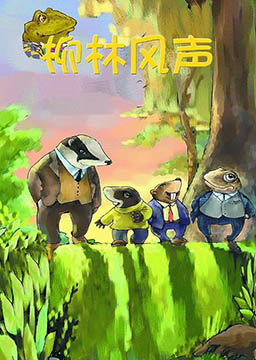
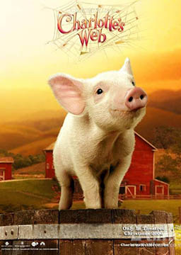
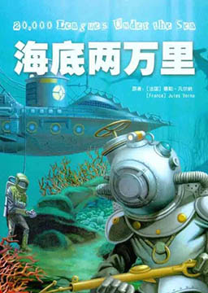

双语小说
收录中英文双语小说300多部，包括世界经典名著、社会小说、悬疑小说等短篇和长篇小说，可按照初中难度、高中难度和大学难度分类阅读，每部小说都有分段中英文对照，点击单词可查看中文翻译。

瓶中信 (Message in a Bottle)
作者：尼古拉斯·斯帕克思 (Nicholas Charles Sparks) [美国]
作者是美国的尼古拉斯·斯帕克思。本书讲述了多情的男人和执著的女人，他们之间的感情故事。内容简介：泰瑞莎一日在海边慢跑时，无意发现了一个埋在白沙中的玻璃瓶，瓶内装着一封属名G的信。泰瑞莎反复看了又看，深深被信中G的热情及真爱所打动了。她好奇着，是怎么样的感情，能让一个人如此心痛。泰瑞莎才从一段失败的婚姻中走出，她把生活重心全放在工作和儿子身上。在别人眼中，她绝对是个成功的单亲妈妈。她任职于芝加哥论坛报的专栏作家，这封她捡来的瓶中信，阴错阳差的被刊登在报纸上，并得到热烈的回响。于是她被指派去寻找这个情感炙热的主人，了解他伤痛的理由。她积极细心的搜寻一切蛛丝马迹，从瓶子、信纸、打字机等线索，终于让她寻得了信的出处。她整理行囊，来到了北卡罗来纳州靠海的小镇，带着尴尬复杂的心情，不是为了工作成就，而是为自己的感情再冒一次险。富人与穷人 (Rich Man Pool Man)
作者：贾普 (Jupp.T.C.) [英国]
亚当和他的妻子玛莎住在一个小村子里。他们有一个儿子，名叫撒乌耳，两年前离开村子，住在伦敦，从事保理业务。有一天亚当收到一封撒乌耳寄来的信。信上说撒乌耳给他的父母寄了100美元。他们非常高兴。但是这封信有问题，因为钱不是现金而是汇票。所以亚当不得不去另一个地方兑换。然后真正的大问题开始了。别了，好莱坞先生（简化版） (Goodbye, Mr.Hollywood)
作者：维卡里、埃金耶米，埃斯科特 (Tim Vicary, Rowena Akinyemi, John Escott) [英国]
女孩儿突然用手捧住尼克的脸，吻了他的嘴唇。“开车小心点儿，好莱坞先生。再见！”女孩儿带着甜甜的微笑说，然后转过身迅速离去了。尼克.洛茨感到莫名其妙。仅仅十分钟前，女孩来到咖啡馆坐在了他旁边，尼克这才认识她的。可她离去时为什么吻了他？她为什么叫他“好莱坞先生”？在开车去温哥华的路上他一直思考着这些问题，可始终找不到答案。其实，这里还有一件事尼克不知道。当女孩对尼克说再见时有人在旁边正听着呢--这个人对“好莱坞先生”这个称号很感兴趣。在温哥华，尼克很快便得知那个人的兴趣于己不利。
柳林风声 (The Wind in the Willows)
作者：肯尼斯·格雷厄姆 (Kenneth Grahame) [英国]
以动物为主角的童话，文笔典雅，描写细致，富含哲理。书中塑造了几个可爱的动物形象：胆小怕事但又生性喜欢冒险的鼹鼠，热情好客、充满浪漫情趣的水鼠，侠义十足、具有领袖风范的老獾，喜欢吹牛、炫耀、追求时髦的蛤蟆，敦厚老实的水獭——他们生活在河岸或大森林里，有乐同享。有难同当。木偶奇遇记 (The Adventures of Pinocchio)
作者：卡洛·科洛迪 (Carlo Collodi) [意大利]
意大利作家卡洛·科洛迪创作的童话，也是其代表作，发表于1880年。该作品于1940年被迪斯尼公司改编为动画电影，后分别于1983年和2002年翻拍真人版。内容简介：仁慈的木匠皮帕诺睡觉的时候，梦见一位蓝色的天使赋予他最心爱的木偶皮诺曹生命，于是小木偶开始了他的冒险。如果他要成为真正的男孩，他必须通过勇气、忠心以及诚实的考验。在历险中，他因贪玩而逃学，因贪心而受骗，还因此变成了驴子。最后，他掉进一只大鲸鱼的腹中，意外与皮帕诺相逢，经过这次历险，皮诺曹终于长大了，他变得诚实、勤劳、善良，成为了一个真真正正的男孩。
动物庄园（简化版） (Animal Farm)
作者：乔治·奥威尔 (George Orwell) [英国]
一个农庄的动物不堪人类主人的压迫，在猪的带领下起来反抗，赶走了农庄主，牲畜们实现了“当家作主”的愿望，农场更名为“动物庄园”，奉行“所有动物一律平等”。之后，两只处于领导地位的猪为了权力而互相倾轧，胜利者一方宣布另一方是叛徒、内奸。此后，获取了领导权的猪拥有了越来越大的权力，成为新的特权阶级；动物们稍有不满，便会招致血腥的清洗：农庄的理想被修正为“有的动物较之其他动物更为平等”，动物们又恢复到从前的悲惨状况。
夏洛的网 (Charlotte's Web)
作者：埃尔文·布鲁克斯·怀特 (Elwyn Brooks White) [美国]
美国E·B·怀特作品，是一部描写关于友情的童话。用童话的叙事风格表现出一分对生命本身的赞美与眷恋，给了我们关于生命的深沉的思索。内容简介：在朱克曼家的谷仓里，快乐地生活着一群动物。小猪威尔伯和蜘蛛夏洛建立了真挚的友谊。然而一个坏消息打破了谷仓里的平静：威尔伯在圣诞节将会被人杀死，做成熏肉火腿！作为一只猪，悲痛欲绝的威尔伯似乎只能接受任人宰割的命运了。然而看似渺小的小蜘蛛夏洛却说：“我救你。”于是，夏洛在猪栏上织出了被人类视为奇迹的网上文字，这些赞美威尔伯的文字彻底改变了威尔伯的命运，终于让威尔伯在集市的大赛上赢得特别奖，和一个安享天年的未来。但在这时，蜘蛛夏洛的生命也走到了尽头……之后威尔伯带着悲伤和感恩抚养了夏洛的孩子！三怪客泛舟记（简化版） (Three Men in a Boat)
作者：杰罗姆.K.杰罗姆 (Jerome K.Jerome) [英国]
谁是这次旅行的主人公呢？有乔治，哈里斯和“杰”，（当然还有“元帅”，它是一只狗）。不论在什么地方，什么时候都能遇到这样的三个年轻人。他们掉进水里，把东西弄丢，吵架，又笑着和好，互相讲故事……他们个个有远大的抱负，热情也很高，可就是到了早上谁也起不来。他们都想当伟大的探险家，可事实上，只要一下雨，他们还是愿意呆在暖和的火炉边，坐在舒适的椅子里。那我们的主人公在河上的经历到底怎么样啊？他们学会在簧火上煎鸡蛋了吗？学会不用启罐器就把罐头打开了吗？这就是他们的故事，三个怪客和一只狗在河上泛舟的故事。
苏格兰玛丽女王（简化版） (Mary Queen of Scots)
作者：提姆·维克瑞 (Tim Vicary) [苏格兰]
1561年，苏格兰还是个未开化的国家。当年轻的苏格兰女王从法国回到苏格兰时，起初，她的人民非常高兴见到她。她的丈夫——法国国王死了，现在，她需要一个新的丈夫。可是玛丽，这位苏格兰女王是个天主教徒，而当时大多数的苏格兰人都是新教徒。当时的英格兰女王——伊丽莎白一世也是位新教徒。在那个年代，人们都乐于为他们自己的教会而战，并不惜献出生命。 年轻的玛丽女王该嫁给谁呢？谁是她的朋友，谁是她的敌人？玛丽既美丽又聪明，她热爱生活，喜欢冒险，也热爱人民。或许，她爱的人太多了。人们说她“又狂又坏，认识她是危险的”。但是那是真的吗？1587年，玛丽坐在英格兰的福瑟临黑城堡里，疲惫又忧伤。现在她是伊丽莎白女王的囚徒，不久将被送上断头台。她拿起笔开始给她的儿子詹姆斯——现在的苏格兰国王写信。这就是她一生的故事。
海底两万里（简化版） (Twenty Thousand Leagues Under The Sea)
作者：儒勒·加布里埃尔·凡尔纳 (Jules Gabriel Verne) [法国]
1866年，海上发现了一只疑似为独角鲸的大怪物，阿龙纳斯教授及仆人康塞尔受邀参加追捕。在追捕过程中，他们与鱼叉手尼德·兰不幸落水，到了怪物的脊背上。他们发现这怪物并非是什么独角鲸，而是一艘构造奇妙的潜艇。潜艇是尼摩在大洋中的一座荒岛上秘密建造的，船身坚固，利用海水发电。尼摩船长邀请阿龙纳斯作海底旅行。他们从太平洋出发，经过珊瑚岛、印度洋、红海、地中海、大西洋，看到海中许多罕见的动植物和奇异景象。途中还经历了搁浅、土著围攻、同鲨鱼搏斗、冰山封路、章鱼袭击等许多险情。最后，当潜艇到达挪威海岸时，三人不辞而别，回到了他的家乡。